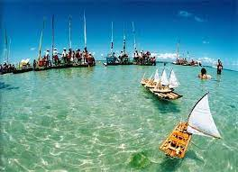
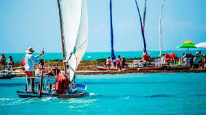

~Piscinas naturais de Pajuçara~

Localizada na capital de Alagoas, Maceió, Pajuçara é conhecida por suas águas cristalinas e uma paisagem de tirar o fôlego, o que a torna um destino imperdível para os amantes da natureza e da praia. Confira todos os detalhes e embarque nessa aventura com a Accor! As piscinas naturais de Pajuçara são formadas por uma extensa faixa de recifes de corais que se estende ao longo da costa. Durante a maré baixa, as águas se acalmam e revelam verdadeiros paraísos subaquáticos, onde é possível observar uma rica diversidade de vida marinha. Os tons de azul e verde das águas são simplesmente deslumbrantes, convidando os visitantes a mergulhar e explorar esse ecossistema único. Além da beleza natural das piscinas, Pajuçara oferece diversas atividades para aproveitar ao máximo sua visita. Você pode desfrutar um passeio de jangada até as piscinas, onde os guias locais compartilham informações fascinantes sobre a vida marinha e os corais. Também é possível aproveitar uma estrutura turística completa, com quiosques, restaurantes e bares à beira-mar. Lá você pode saborear pratos típicos da culinária alagoana.Descubra o que fazer em Pajuçara e encante-se com esse destino único!
-Como chegar nas piscinas naturais da pajuçara

Uma das atividades mais populares na Praia de Pajuçara é o passeio de jangada até as piscinas naturais. Os barqueiros levam os visitantes através das águas transparentes e relaxantes, oferecendo a oportunidade de explorar os corais coloridos e nadar ao lado de peixes tropicais. É uma experiência inesquecível.Os passeios de jangada e barco levam aproximadamente 20 minutos a partir do ponto de encontro em Pajuçara, e o tour custa cerca de 35 reais por pessoa. Além disso, não deixe de conferir se a embarcação oferece alimentação. Afinal, nada melhor que curtir as piscinas naturais de Alagoas petiscando com um bom drink, não é mesmo?
-Gastronomia local

A cidade oferece uma variedade de opções gastronômicas para satisfazer todos os gostos. Aqui estão alguns dos melhores pratos para se deliciar com a culinária local: Sururu: experimente o famoso sururu, um molusco típico da região de Alagoas. É frequentemente preparado em deliciosos ensopados ou como recheio de tortas e empadas. Frutos do mar: aproveite a proximidade do mar e prove uma grande variedade de frutos do mar frescos. Peça pratos como camarão, lagosta, peixe grelhado ou moqueca de frutos do mar. Tapioca: a tapioca não poderia faltar, uma iguaria tradicional nordestina feita de massa de mandioca. É uma opção versátil que pode ser servida com diversos recheios, como queijo coalho, coco, carne de sol, chocolate e muito mais. As barracas de tapioca são comuns na região e oferecem uma experiência autêntica. Comida regional: explore a gastronomia regional de Alagoas com pratos como o baião de dois, o feijão-verde, a macaxeira (aipim) e a carne de sol. Esses pratos são preparados com ingredientes locais e têm um sabor único e marcante. Bebidas típicas: não deixe de provar a cachaça artesanal e o licor de jenipapo, típicos da região. Essas bebidas são muito apreciadas pelos visitantes e moradores locais. Ao explorar a verdadeira culinária em Pajuçara, você terá a oportunidade de experimentar pratos autênticos da região e mergulhar na rica cultura alagoana. Não deixe de visitar o ibis Styles Kitchen, no ibis Styles Maceió Pajuçara, para provar o melhor da cozinha regional a poucos passos do conforto!
Comidas sureridas

- Chiclete de camarão: Camarões envoltos em molho cremoso e queijo
- Siri mole ao coco: Siri mole refogado com leite de coco, cebola, pimentão, coentro, tomate, farinha, e mandioca
- Macaxeira com carne de sol
- Caldinho de sururu: Caldo saboroso feito com o molusco sururu
- Moqueca de frutos do mar: Preparada com peixes frescos e leite de coco
- Pituzada: Camarões grandes cozidos em molhos ricos
- Carne de sol com feijão verde, queijo coalho, arroz e vinagrete